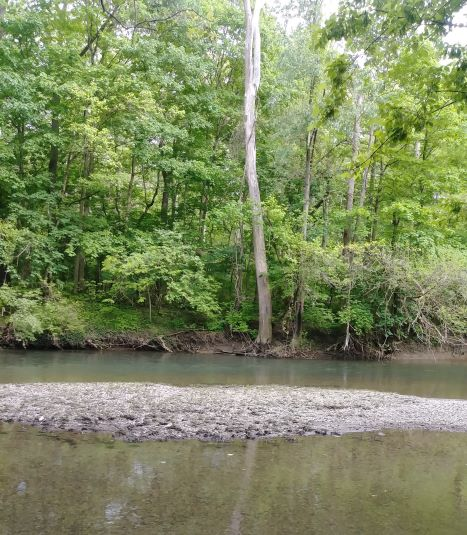

| Mini Project 1 | Mini Project 2 | Mini Project 3 | Mini Project 4 | Mini Project 5 | Mini Project 6 | Final Project | Design Document |
|---|
|  |
| It is a pleasure to have you here on my page. My name is Joseph Boateng. I am originally from Ghana, formerly named Gold Coast by the British. I had my first degree in Social Sciences (Sociology and Economics) at the University of Cape, Ghana. I also had Associate Diploma in Education at that University. My graduate degrees were obtained here in Ohio at the University of Akron. My graduate level studies were in Urban Studies and Public Management.
I have had both teaching and civil service professional experiences. As civil servant, I worked as a Program Officer with the National Commission for Civic Education, Ghana. Prior to that I taught at the high school level. At present, I teach for the Pan African Studies Program and College of Applied Sciences and Technology at the University of Akron. I love sports especially football (soccer). Also, I have strong bias for classical Reggae music and country music. I always cherish to be with people who have great sense of humor. This assignment page marks the begining of series of projects required in the Multimedia/Hypermedia class of the Instructional Technology Course. The links below and above lead to the individual projects with detail accounts of the tasks that led to the completion of those projects. More or less, those final projects are a demonstration of the skills that I have acquired in this course. And, it has been a tremendous positive experience. |
The University of Akron Homepage